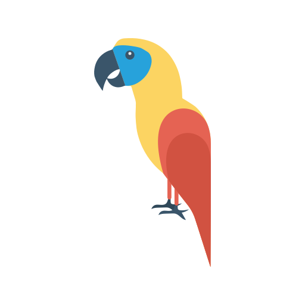

<nav class="navbar navbar-dark navbar-expand-lg text-white mat-elevation-z8">
  
    <ul class="navbar-nav mr-auto">
      <li >
        <h1>AVISTAMIENTO DE AVES</h1>
      </li>
    </ul>
    <ul class="navbar-nav ml-auto">
      <li *ngIf="userInfo()?.user"class="nav-item nav-nombre mr-4">
       <h1>Bienvenido {{userInfo().user}}!</h1>
      </li>
      <li class="nav-item">
        <button (click)="backClicked()" *ngIf="userInfo()?.user" mat-raised-button color="accent"><mat-icon>navigate_before</mat-icon></button>
      </li>
    </ul>
</nav>
